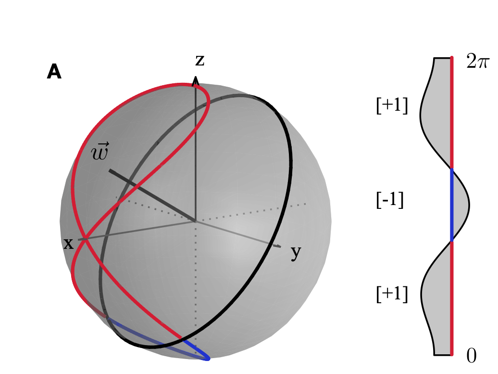
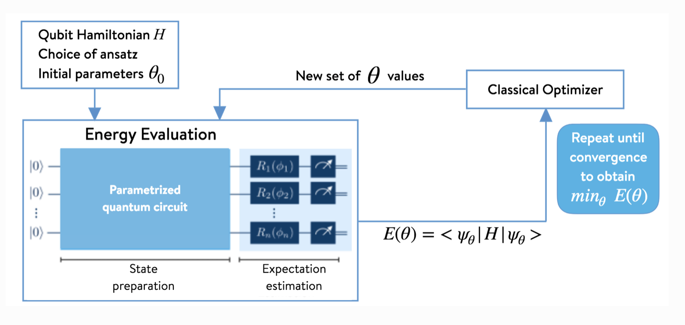

Near-term Quantum Algorithms#
Instructor : Hwajung Kang, Ph.D., Quantum Computational Scientist, IBM Quantum
Parametrized circuit#
from qiskit import *
from qiskit.circuit import Parameter, ParameterVector
from qiskit.quantum_info import Statevector, SparsePauliOp, state_fidelity
from qiskit.visualization.bloch import Bloch
from qiskit.circuit.library import XGate, YGate, ZGate, ZZFeatureMap, EfficientSU2
from qiskit_ibm_runtime import QiskitRuntimeService
from qiskit_ibm_runtime import Estimator, Session, Options
import numpy as np
import numpy.linalg as la
import matplotlib.pyplot as plt
from scipy.optimize import minimize
import pandas as pd
Build parametrized circuit#
parameter#
theta, gamma, lam = Parameter('θ'), Parameter('γ'), Parameter('λ')
myqc1 = QuantumCircuit(1)
myqc1.u(theta, gamma, lam, 0)
print(myqc1)
myvals = [1, 2, 3]
mybc1 = myqc1.bind_parameters({theta:1, gamma:2, lam:3})
#mybc1 = myqc1.assign_parameters(myvals)
print(mybc1)
┌──────────┐
q: ┤ U(θ,γ,λ) ├
└──────────┘
┌──────────┐
q: ┤ U(1,2,3) ├
└──────────┘
Note: The parameter values are assigned in the alphabetical order rather than the insertion order when assign_parameters method is used.
parameter vector#
ang = ParameterVector('φ', 3)
myqc2 = QuantumCircuit(1)
myqc2.u(*ang, 0)
print(myqc2)
mybc2 = myqc2.assign_parameters(myvals)
#mybc2 = myqc2.bind_parameters({ang:myvals})
print(mybc2)
┌───────────────────┐
q: ┤ U(φ[0],φ[1],φ[2]) ├
└───────────────────┘
┌──────────┐
q: ┤ U(1,2,3) ├
└──────────┘
partial binding#
theta, gamma, lam = Parameter('θ'), Parameter('γ'), Parameter('λ')
myqc1 = QuantumCircuit(1)
myqc1.u(theta, gamma, lam, 0)
print(myqc1)
myvals = [1, 2, 3]
mybc1 = myqc1.bind_parameters({theta:1, gamma:2})
print(mybc1)
┌──────────┐
q: ┤ U(θ,γ,λ) ├
└──────────┘
┌──────────┐
q: ┤ U(1,2,λ) ├
└──────────┘
two_angs, one_ang = ParameterVector('δ', 2), Parameter('ε')
myqc3 = QuantumCircuit(1)
myqc3.u(*two_angs, one_ang, 0)
print(myqc3)
mybc3 = myqc3.bind_parameters({two_angs:[1, 2]})
print(mybc3)
┌────────────────┐
q: ┤ U(δ[0],δ[1],ε) ├
└────────────────┘
┌──────────┐
q: ┤ U(1,2,ε) ├
└──────────┘
Hands-on exercise 1.
Build a five qubit quantum circuit where a `rx` gate with an unique parametrized angle is applied to each qubit. Then apply `cp` gates with different parametrized angles between the $k$th and $k$th+1 qubits. Assign numerical values that you want only to `cp` gates.
## your code goes here
Usecase 1. Data Encoding - Quantum feature map for QSVM#
QSVM : Quantum Support Vector Machine
Reference : Havlicek et al. Nature 567, 209-212 (2019)

1-dim data#
num = 500
data = 2 * np.pi * np.random.rand(num)
print(data[:5])
x = Parameter(name='x')
qc_data = QuantumCircuit(1)
qc_data.h(0)
qc_data.rz(x, 0)
qc_data.h(0)
qc_data.rz(x, 0)
qc_data.draw('mpl')
[0.34406504 2.81983364 3.82229807 0.75384453 4.60629668]
X, Y, Z = XGate(), YGate(), ZGate()
Xop, Yop, Zop = X.to_matrix(), Y.to_matrix(), Z.to_matrix()
def state_to_bloch(state_vec):
phi = st.data
bx = phi.conjugate() @ Xop @ phi
by = phi.conjugate() @ Yop @ phi
bz = phi.conjugate() @ Zop @ phi
return [bx, by, bz]
st_data = [Statevector.from_instruction(qc_data.assign_parameters([dat]))for dat in data]
fig = plt.figure()
ax = fig.add_subplot(1, 1, 1, projection='3d')
b = Bloch(axes=ax)
b.point_color = ['tab:blue']
b.point_marker = ['o']
b.point_size =[2]
for st in st_data:
v = state_to_bloch(st)
b.add_points(v)
b.show()
N-dim data#
Check out Data encoding circuits in Qiskit circuit library
where $\(\phi_S:\mathbf{x}\mapsto \Bigg\{\begin{array}{ll} x_i & \mbox{if}\ S=\{i\} \\ (\pi-x_i)(\pi-x_j) & \mbox{if}\ S=\{i,j\} \end{array}.\)$
ZZFeatureMap is defined as:
ZZFeatureMap(feature_dimension, reps=2,
entanglement='full', data_map_func=None,
parameter_prefix='x', insert_barriers=False)
data = 2 * np.pi * np.random.rand(5, 3)
df = pd.DataFrame(data)
df.rename(columns=dict(zip(df.columns, ['feat1', 'feat2', 'feat3'])))
| feat1 | feat2 | feat3 | |
|---|---|---|---|
| 0 | 4.707307 | 2.648320 | 4.652974 |
| 1 | 1.721352 | 5.741122 | 1.690763 |
| 2 | 4.558817 | 2.075748 | 3.914357 |
| 3 | 1.180898 | 1.999571 | 1.039296 |
| 4 | 4.483466 | 0.929659 | 3.634805 |
feat_map = ZZFeatureMap(3, reps=1)
feat_map.decompose().draw('mpl')
feat_map_data = [feat_map.assign_parameters(dat) for dat in data]
print('the number of quantum circuits : {}'.format(len(feat_map_data)))
feat_map_data[2].decompose().draw('mpl')
the number of quantum circuits : 5
Hands-on exercise 2.
Encode the following data, `data_ex`, using the `ZZFeatureMap` with 2 repetition.
data_ex = 7*np.random.rand(10, 5)
df_ex = pd.DataFrame(data_ex)
df_ex.rename(columns=dict(zip(df_ex.columns,['feat1', 'feat2', 'feat3', 'feat4', 'feat5'])))
| feat1 | feat2 | feat3 | feat4 | feat5 | |
|---|---|---|---|---|---|
| 0 | 5.193445 | 3.008366 | 5.022003 | 1.074632 | 3.240233 |
| 1 | 1.371957 | 4.605817 | 4.951021 | 5.289876 | 6.183888 |
| 2 | 6.454858 | 1.186365 | 6.075760 | 1.558909 | 2.726623 |
| 3 | 3.308575 | 6.512019 | 6.164084 | 2.314271 | 5.844496 |
| 4 | 5.800402 | 0.859337 | 4.221778 | 6.332333 | 2.530967 |
| 5 | 5.082851 | 4.816116 | 4.635174 | 0.861076 | 6.177960 |
| 6 | 6.935813 | 0.270809 | 0.135152 | 0.176273 | 1.584973 |
| 7 | 1.822595 | 4.066294 | 0.146583 | 0.209869 | 3.676592 |
| 8 | 5.654176 | 3.075834 | 3.422146 | 2.835517 | 0.206371 |
| 9 | 3.425317 | 0.209235 | 6.659956 | 4.744474 | 3.315798 |
## your code goes here
Usecase 2. Ansatz preparation- VQA#
VQA : Variational Quantum Algorithm
Check out the section N-local circuits in Qiskit circuit library
EfficientSU2 is a parametrized quantum circuit generating a hardware efficient, heuristic ansatz with alternating rotation and entanglement layer, which is used for variational quantum algorithms or classification circuit for machine learning.
EfficientSU2(num_qubits=None, su2_gates=None, entanglement='reverse_linear',
reps=3, skip_unentangled_qubits=False,
skip_final_rotation_layer=False, parameter_prefix='θ',
insert_barriers=False, initial_state=None)
Check TwoLocal for entanglement strategies.
Hands-on exercise 3.
Build a circuit to generate a hardware efficient ansatz for a 5 qubit system through `EfficientSU2` with 3 repetitions, using `h` and `rz` gates for `su2_gates`, implementing the `entangler_map` $= [[2, 1], ~ [1, 0], ~ [2, 3], ~[3, 4]]$.
## your code goes here
Further Reading
Variational Quantum Eigensolver#
-
What is VQE?
- VQE, Variational Quantum Eigensolver, uses variational method to approximate ground state of Hamiltonian.
- Chemistry and material science : Finding the ground state and energy given Hamiltonian
- Optimization problem : Finding the optimal solution of the problem encoded as a Hamiltonian
Applications
Workflow#

Ex.1 Estimate the ground state of one qubit system and its energy for the given Hamiltonian, \(H=Y\).#
Exact Answer#
H = Y
eigvals, eigvecs = la.eig(H)
Eg = np.min(eigvals)
print('The true ground state energy of H : {}'.format(np.round(Eg, 3)))
The true ground state energy of H : (-1+0j)
Using VQE#
Step 1. Ansatz - State Preparation
theta = Parameter('θ')
qc = QuantumCircuit(1)
qc.ry(theta, 0)
qc.draw('mpl')
def state_to_bloch(state_vec):
phi = state_vec.data
bx = phi.conjugate() @ Xop @ phi
by = phi.conjugate() @ Yop @ phi
bz = phi.conjugate() @ Zop @ phi
return [bx, by, bz]
angs = np.linspace(0, 2*np.pi, 150)
st_all = [Statevector.from_instruction(qc.assign_parameters([ang])) for ang in angs]
fig = plt.figure()
ax = fig.add_subplot(1, 1, 1, projection='3d')
b = Bloch(axes=ax)
b.point_color = ['tab:blue']
b.point_marker = ['o']
b.point_size =[2]
for st in st_all:
v = state_to_bloch(st)
b.add_points(v)
b.show()
Reference: Parametrized Quantum Circuits
# First, we need to define the circuits:
theta_param = Parameter('θ')
phi_param = Parameter('Φ')
# Circuit A
qc_A = QuantumCircuit(1)
qc_A.h(0)
qc_A.rz(theta_param, 0)
# Circuit B
qc_B = QuantumCircuit(1)
qc_B.h(0)
qc_B.rz(theta_param, 0)
qc_B.rx(phi_param, 0)
print(qc_A)
print(qc_B)
# Next we uniformly sample the parameter space for the two parameters theta and phi
np.random.seed(0)
num_param = 1000
theta = [2*np.pi*np.random.uniform() for i in range(num_param)]
phi = [2*np.pi*np.random.uniform() for i in range(num_param)]
# Then we take the parameter value lists, build the state vectors corresponding
# to each circuit, and plot them on the Bloch sphere:
from qiskit.visualization.bloch import Bloch
from qiskit.quantum_info import Statevector
def state_to_bloch(state_vec):
# Converts state vectors to points on the Bloch sphere
phi = np.angle(state_vec.data[1])-np.angle(state_vec.data[0])
theta = 2*np.arccos(np.abs(state_vec.data[0]))
return [np.sin(theta)*np.cos(phi),np.sin(theta)*np.sin(phi),np.cos(theta)]
# Bloch sphere plot formatting
width, height = plt.figaspect(1/2)
fig=plt.figure(figsize=(width, height))
ax1, ax2 = fig.add_subplot(1, 2, 1, projection='3d'), fig.add_subplot(1, 2, 2, projection='3d')
b1,b2 = Bloch(axes=ax1), Bloch(axes=ax2)
b1.point_color, b2.point_color = ['tab:blue'],['tab:blue']
b1.point_marker, b2.point_marker= ['o'],['o']
b1.point_size, b2.point_size=[2],[2]
# Calculate state vectors for circuit A and circuit B for each set of sampled parameters
# and add to their respective Bloch sphere
for i in range(num_param):
state_1=Statevector.from_instruction(qc_A.bind_parameters({theta_param:theta[i]}))
state_2=Statevector.from_instruction(qc_B.bind_parameters({theta_param:theta[i], phi_param:phi[i]}))
b1.add_points(state_to_bloch(state_1))
b2.add_points(state_to_bloch(state_2))
b1.show()
b2.show()
┌───┐┌───────┐
q: ┤ H ├┤ Rz(θ) ├
└───┘└───────┘
┌───┐┌───────┐┌───────┐
q: ┤ H ├┤ Rz(θ) ├┤ Rx(Φ) ├
└───┘└───────┘└───────┘
Reference : Expressibility and entangling capability of parameterized quantum circuits

param = ParameterVector('p', 3)
ansatz = QuantumCircuit(1)
ansatz.u(*(param), 0)
ansatz.draw('mpl')
Step 2. Build Cost function using Estimator
def cost(params, ansatz, H_op, estimator, shots=int(1e4)):
"""Return estimated cost value
Parameters:
params (ndarray): Array of ansatz parameter values
ansatz (Quantumcircuit): Parametrized quantum circuit generating trial ground state
H_op (operator): Hamiltonian
estimator (Estimator): runtime estimator returning expectation value of H_op
for ansatz with given params
Returns:
float: Estimated energy expectation value
"""
energy = estimator.run(ansatz, H_op, parameter_values=params, shots=shots).result().values[0]
energy_all.append(energy)
return energy
Step 3. Set up IBM Runtime and minimize the cost function for the given Hamiltonian
service = QiskitRuntimeService(instance='ibm-q-skku/2023-quantum-lea/2023-quantum-lea')
service.backends()
[<IBMBackend('ibm_cairo')>,
<IBMBackend('ibm_hanoi')>,
<IBMBackend('ibmq_kolkata')>,
<IBMBackend('ibmq_mumbai')>,
<IBMBackend('ibm_algiers')>,
<IBMBackend('ibm_auckland')>,
<IBMBackend('ibmq_jakarta')>,
<IBMBackend('ibm_perth')>,
<IBMBackend('ibmq_qasm_simulator')>,
<IBMBackend('ibmq_guadalupe')>,
<IBMBackend('ibm_lagos')>,
<IBMBackend('ibm_nazca')>,
<IBMBackend('ibmq_belem')>,
<IBMBackend('ibmq_quito')>,
<IBMBackend('ibm_nairobi')>,
<IBMBackend('ibm_sherbrooke')>,
<IBMBackend('ibm_seattle')>,
<IBMBackend('ibm_brisbane')>,
<IBMBackend('ibm_cusco')>,
<IBMBackend('ibmq_manila')>,
<IBMBackend('ibmq_lima')>,
<IBMBackend('simulator_extended_stabilizer')>,
<IBMBackend('simulator_mps')>,
<IBMBackend('simulator_statevector')>,
<IBMBackend('simulator_stabilizer')>]
backend = service.get_backend('ibmq_qasm_simulator')
session = Session(backend=backend)
est = Estimator(session=session)
energy_all = []
param_init = 2 * np.pi * np.random.rand(ansatz.num_parameters)
ret = minimize(cost, param_init, args=(ansatz, H, est, ), method='COBYLA')
session.close()
plt.plot(energy_all)
[<matplotlib.lines.Line2D at 0x2a248c5d0>]
ret
message: Optimization terminated successfully.
success: True
status: 1
fun: -1.0
x: [ 4.717e+00 1.568e+00 4.214e+00]
nfev: 31
maxcv: 0.0
print('The true ground state energy of H : {}'.format(np.round(Eg, 3)))
print('The estimated ground state energy of H : {}'.format(np.round(ret.fun, 3)))
The true ground state energy of H : (-1+0j)
The estimated ground state energy of H : -1.0
Hands-on exercise 4.
Estimate the ground state energy for the given Hamiltonian, $H=XX + 2YY + 3ZZ$.
Use
EfficientSU2as your ansatz.Check SparsePauliOp
Exact Answer#
H2q = np.kron(X, X) + 2 * np.kron(Y, Y) + 3 * np.kron(Z, Z)
eigvals, eigvecs = la.eig(H2q)
Eg2q = np.min(eigvals)
print('The true ground state energy of H : {}'.format(np.round(Eg2q, 3)))
The true ground state energy of H : (-6+0j)
## your code goes here
import qiskit.tools.jupyter
%qiskit_version_table
%qiskit_copyright
Version Information
| Qiskit Software | Version |
|---|---|
qiskit-terra | 0.24.1 |
qiskit-aer | 0.12.0 |
qiskit-ibmq-provider | 0.20.2 |
qiskit | 0.43.1 |
qiskit-nature | 0.6.0 |
| System information | |
| Python version | 3.11.4 |
| Python compiler | Clang 15.0.7 |
| Python build | main, Jun 10 2023 18:08:41 |
| OS | Darwin |
| CPUs | 10 |
| Memory (Gb) | 32.0 |
| Fri Jul 14 22:39:06 2023 EDT | |
This code is a part of Qiskit
© Copyright IBM 2017, 2023.
This code is licensed under the Apache License, Version 2.0. You may
obtain a copy of this license in the LICENSE.txt file in the root directory
of this source tree or at http://www.apache.org/licenses/LICENSE-2.0.
Any modifications or derivative works of this code must retain this
copyright notice, and modified files need to carry a notice indicating
that they have been altered from the originals.